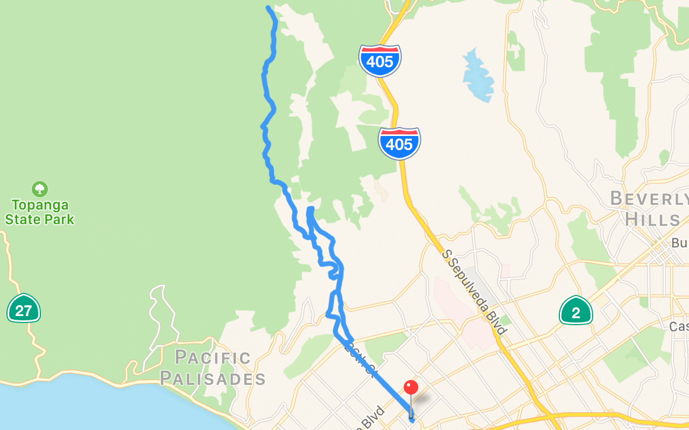

Router
Router makes viewing & editing .GPX, .TCX, .KML, Garmin .FIT, and Pioneer .DB route files on your Mac a snap. Download Router from the Mac App Store.

Grab some sample routes.
For help or support with Router, send an email.
- v1.1.6
- Compatibility with macOS 10.11 (El Capitan)
- v1.1.5
- Laps from Garmin & Pioneer devices are parsed
- Show grade for trackpoints, when available
- Fixed Pioneer distance parsing
- Table columns remembered across sessions
- “Zoom to Selection” is an alternate menu item for “Zoom to Route”
- v1.1.4
- Remember pref of table view visibility
- Maximum speed along route is displayed
- Metric distance formatting improvement
- Dock app menu
- Fix for duplicating .DB & .FIT routes
- v1.1.3
- Touchbar support
- v1.1.2
- Bing Maps
- Document > Save As, Revert, Rename…, Move To…, & Revert To menu items enabled
- v1.1.1
- Improved Pioneer .DB parsing
- Support for OpenStreetMap
- Crop the beginning/end of a route through the trackpoint table
- Select columns to delete trackpoint attributes (other than location/elevation)
- v1.1
- Trackpoint table
- Copy trackpoint location
- Copy external map URL for tracepoint
- v1.0.6
- Toolbar item to open starting pointing in Apple Maps
- Even more better TCX, KML, and GPX parsing
- Preference for Apple Maps or Google Maps and units of measurement (Imperial/Metric)
- v1.0.5
- Improved route parsing
- v1.0.4
- Support for Pioneer cycle computer routes
- v1.0.3
- Icons for
.fit, .gpx, .tcx, and .kml documents
- v1.0.2
- Application icon
- v1.0.1
- Add credits for included libraries
- v1.0.0
- Initial release